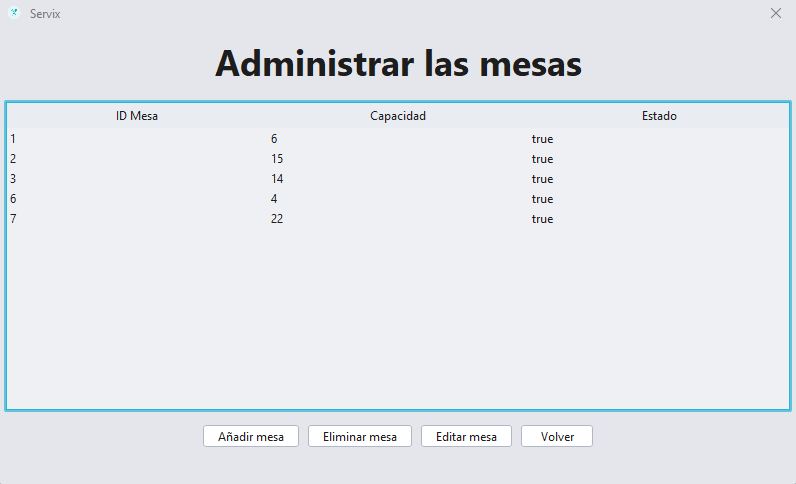
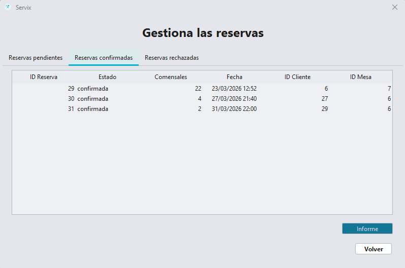
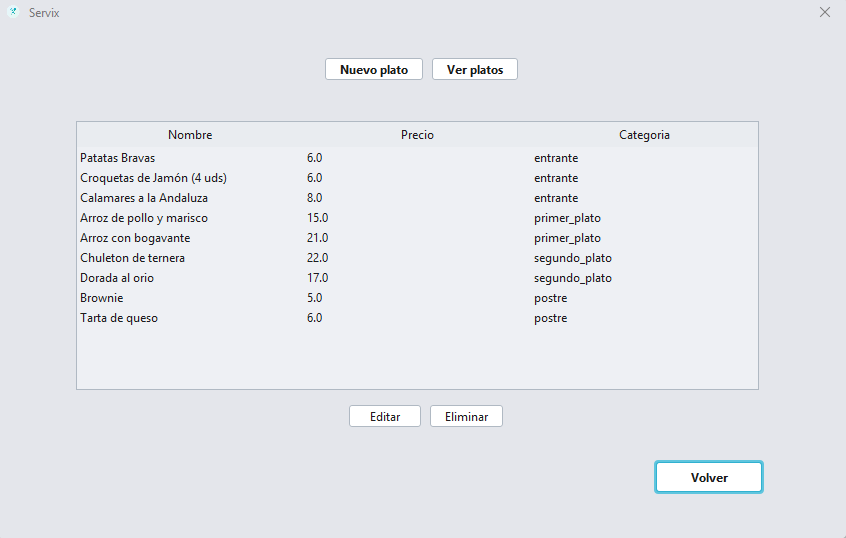
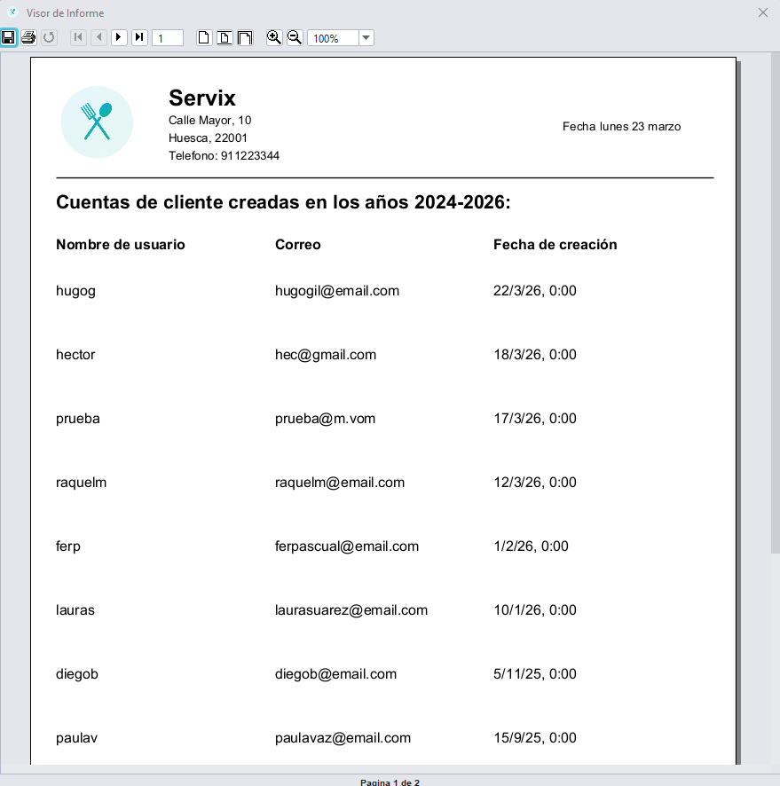
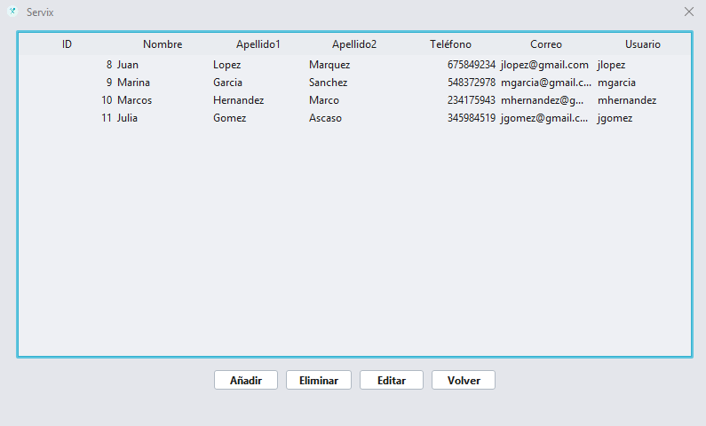
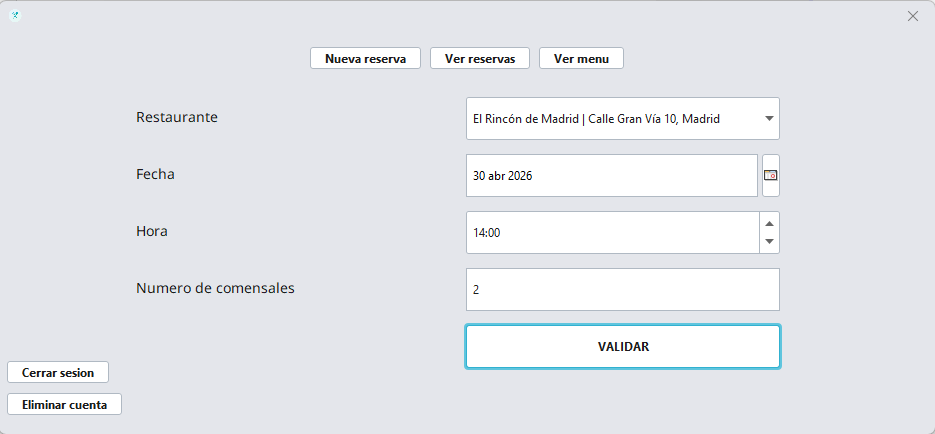
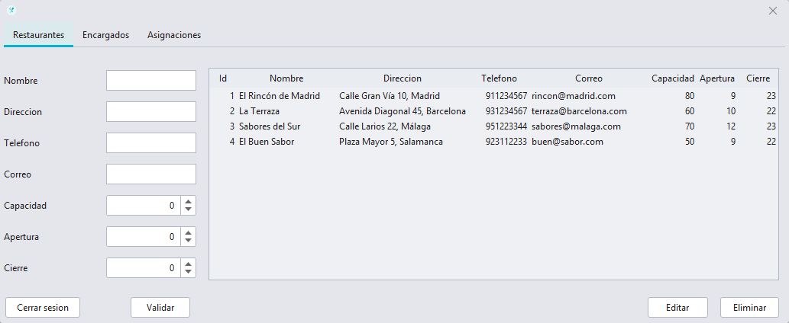
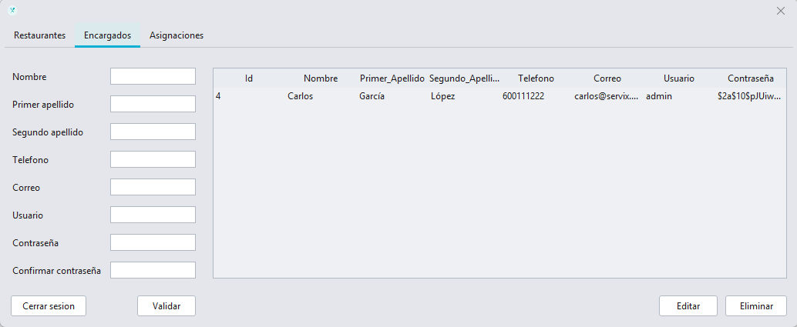
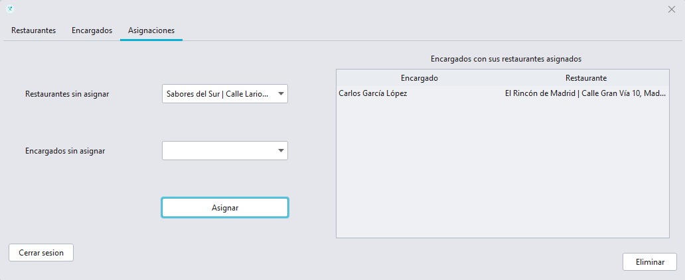

Servix
La herramienta definitiva para la gestión operativa de tu restaurante.
La herramienta definitiva para la gestión operativa de tu restaurante.

Visualiza el estado de tu sala de un vistazo. Controla qué mesas están libres, cuáles ocupadas y optimiza la rotación para maximizar tus ingresos.

Olvida las anotaciones a mano. Gestiona todas tus reservas diarias de forma digital, asigna mesas automáticamente y mantén controlados a tus clientes para ofrecer un buen servicio.

Gestiona tu oferta gastronómica con precisión. Actualiza platos, precios y categorias para que tu equipo de sala siempre sepa qué ofrecer y tus clientes nunca pidan un plato que se acaba de agotar. Evita confusiones y garantiza una experiencia impecable desde el primer bocado.

Accede a informes detallados y toma decisiones basadas en datos, no en suposiciones.

Ofrece a tu personal una herramienta clara para consultar reservas en fechas seleccionadas y gestionar la sala sin depender de órdenes verbales. Mejora la comunicación interna y permite que tus camareros se enfoquen en lo más importante: la atención al cliente.

Ofrece a tus comensales una experiencia digital completa. Con sus propias cuentas, podrán realizar reservas en segundos y consultar tu carta actualizada, haciendo que volver a tu restaurante sea más fácil que nunca.

Como administrador principal, tendrás una visión global de toda la cadena. Supervisa el rendimiento de cada sede, ajusta parámetros globales y garantiza que los estándares de calidad de tu marca se cumplan en cada mesa.

Delega con confianza. Crea y gestiona perfiles para tus encargados de local, otorgándoles los permisos necesarios para liderar sus equipos sin comprometer la seguridad de los datos sensibles de tu empresa.

Administra múltiples restaurantes desde una sola cuenta. Asigna personal a locales específicos y cambia de establecimiento con un solo clic, facilitando la rotación de empleados y la organización de grandes grupos hosteleros.